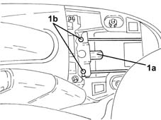
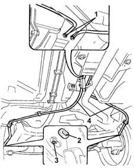

3380A30 handbrake cable - r+r
- Path
- Procedures > 33 BRAKING SYSTEM > 3380 HANDBRAKE > 3380A handbrake control and linkage > 3380A30 handbrake cable - r+r
- Kind
- repair procedure (removal / refitting; the operation number is the code)
- Applies to
- all engines; all production periods
- Interactive page
- https://sloeber94.github.io/elrnDB-lYpsln/en/#/2429210
Applies to: all engines; all production periods
 Removing
Removing
 Refitting
RefittingPlace the vehicle on a ramp.
Proceed with removal 7040L22 REAR TRIM on TUNNEL -R.R. .
1. Loosen adjustment nut (1a), then disconnect handbrake control cables (1b) from the mount.

Applies to: all engines; all production periods
1. Withdraw the handbrake control cables from the passage on the body floor pan.
2. Remove the plugs.
3. Disconnect the handbrake cables from the rear brakes.
4. Remove the handbrake cable after releasing from the underbody fastenings.

Applies to: all engines; all production periods
Refitting
RemovingRefit the handbrake control cables and secure with underbody fastenings.
Connect the handbrake cables to the rear brakes.
Refit the plugs in their housings.
Pass the handbrake cables through the passage on the body floorpan.
Connect the handbrake cables to the mount.
Proceed with refitting 3380A04 handbrake - check travel .
Proceed with refitting 7040L22 REAR TRIM on TUNNEL -R.R. .
Remove the car from the ramps.